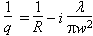
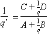
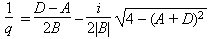
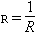
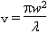
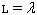
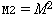

For Gaussian beams, the complex beam parameter q is defined to as

where R is the wave-front radius of curvature, w the mode size, and  the wavelength. At a waist, R is infinite and q is purely imaginary.
the wavelength. At a waist, R is infinite and q is purely imaginary.
After passing through an optical element whose transfer matrix elements are A, B, C and D, the complex beam parameter becomes

If the matrix represents the round-trip matrix of a resonator, then a self-consistency argument requires that

Information about the reciprocal complex beam parameter
| Symbol | Definition |
|  | The reciprocal of the wave front radius of curvature. |
|  | A scaled waist, equal to the Rayleigh length at the waist. |
|  | The wavelength, in nm. |
|  | The beam propagation factor. |
As with optic curvatures, a wave front curvature of 0 is used to represent a plane wave front. However, since the calculations are performed using IEEE double-precision floating point arithmetic, round-off errors can lead to curvatures on the order of